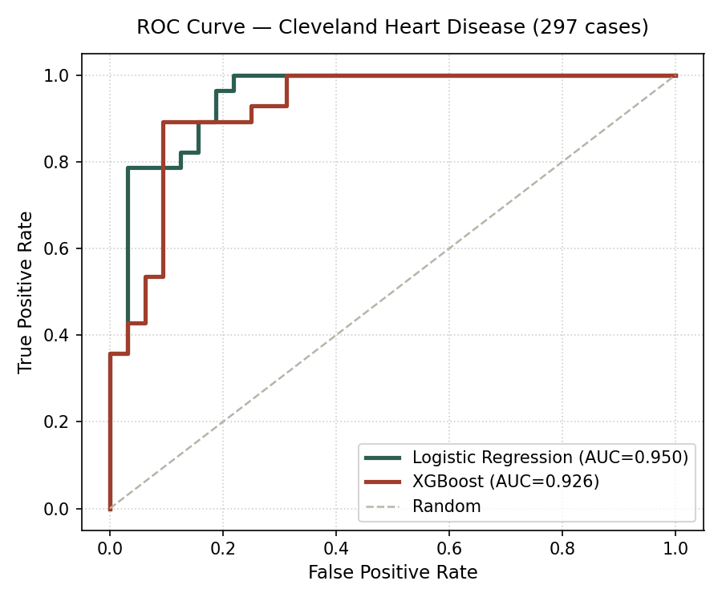

Does the more complex model deserve your trust?
In this project, we test a core question in Explainable AI: How does dataset scale and complexity change the trade-off between an inherently interpretable model (Logistic Regression) and a black-box ensemble (XGBoost)?
On smaller tabular data, the regularized linear model avoids overfitting. Logistic Regression achieves an AUC of 0.9498, exceeding XGBoost's 0.9263 with identical sensitivity (82.1%).
As sample size scales into the tens of thousands, XGBoost unlocks higher-order non-linear feature interactions, pulling ahead with 87.69% accuracy (+3.06% lead) and 0.9305 AUC (+0.039 lead).
Every prediction is computed as an auditable linear sum of weights ($z = \beta_0 + \sum \beta_i x_i$). Every weight is exact, constant, and mathematically faithful. Zero post-hoc approximation error.
Ensemble of boosted decision trees voting together. The internal logic cannot be written as a single algebraic equation, requiring SHAP (Shapley Additive exPlanations) to estimate game-theoretic marginal contributions.
Predict & Explain: Cleveland Heart Disease
Enter patient clinical indicators to evaluate disease risk side-by-side using both models.
Model Performance & Validation
Compare performance metrics and ROC curves for both models under the selected dataset and across dataset scales.
| Metric | Logistic Regression (Interpretable) | XGBoost (Black-Box) | Advantage / Note |
|---|---|---|---|
| Loading benchmark metrics… | |||

1. Small Data (Heart Disease - 297 cases)
Logistic Regression matches XGBoost in Accuracy (83.3% vs 85.0%) and achieves superior ROC-AUC (0.9498 vs 0.9263). The high variance of tree models yields no clinical accuracy gain.
2. Big Data (Adult Census - 32,561 cases)
XGBoost pulls ahead decisively (87.69% vs 84.63% Accuracy, 0.9305 vs 0.8916 AUC). With 32k rows, trees learn complex non-linear combinations of Capital Gains, Education, and Age without overfitting.
3. The Explainability Trade-Off
While XGBoost wins on large data, computing exact TreeSHAP values for real-time inference is computationally expensive ($O(T \cdot L \cdot D^2)$), whereas Logistic Regression explanations take microseconds ($O(D)$).